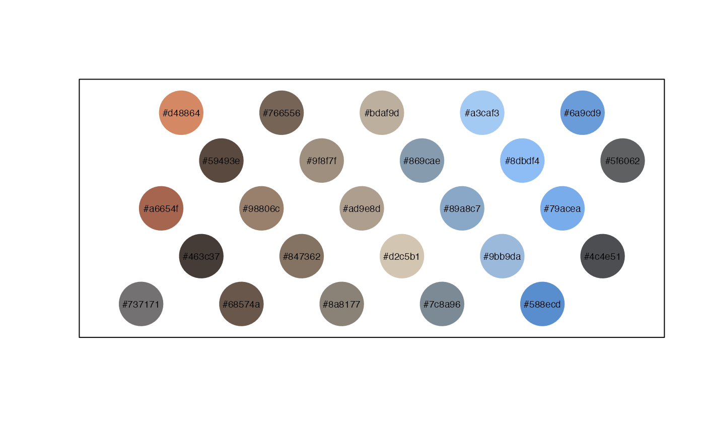

Retrieves hexadecimal codes for the colors in an image file. Currently only PNG, JPEG, TIFF, and HEIC files are supported. The function automatically removes dark colors and removes 'similar' colors to yield 25 colors from which you can select the subset that works best for your visualization needs. Note that photos that are very dark may return few viable colors.
Value
(character) Vector containing all hexadecimal codes remaining after extraction and removal of 'dark' and 'similar' colors
Examples
# Extract colors from a supplied image
my_colors <- palette_extract(image = system.file("extdata", "lyon-fire.png",
package = "lterpalettefinder"), sort = TRUE, progress_bar = FALSE)
# Plot that result
palette_demo(palette = my_colors)
